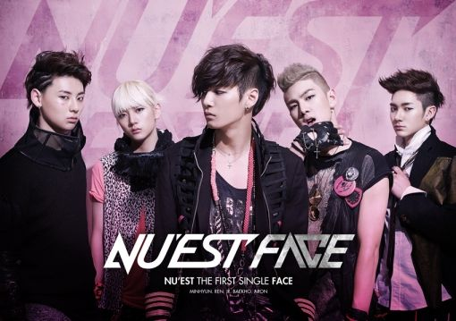
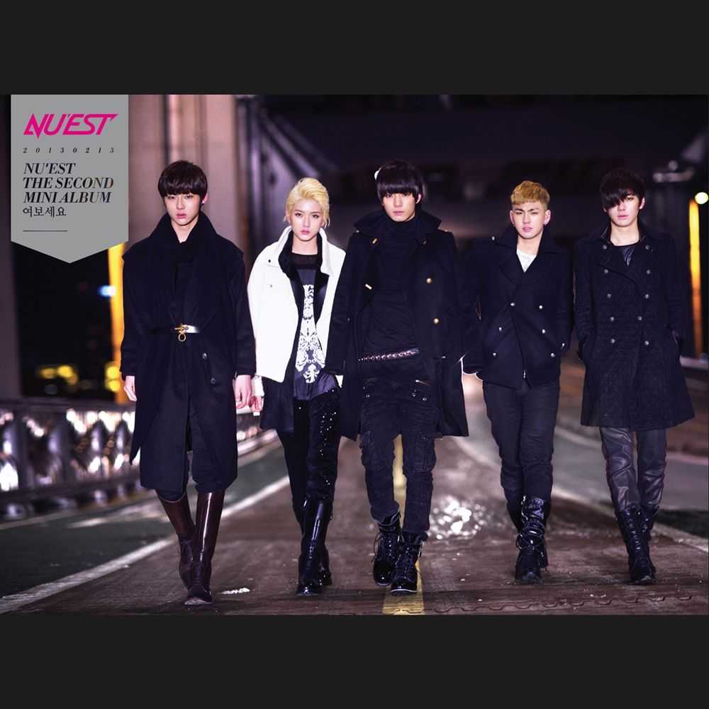
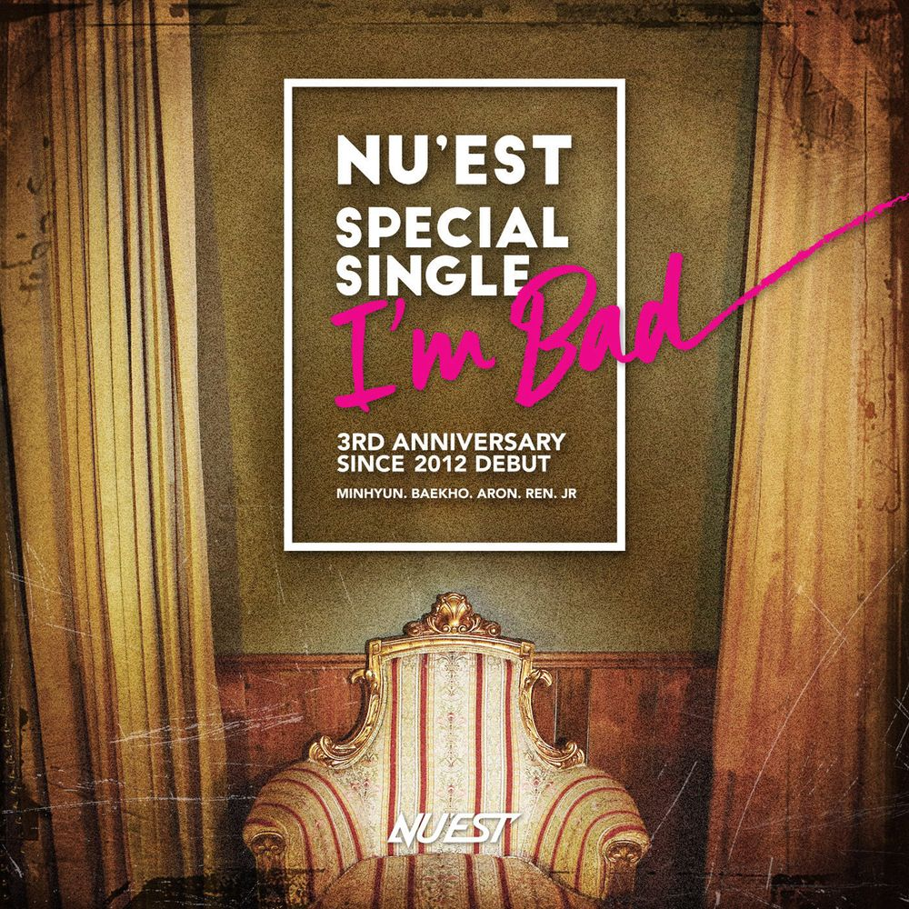
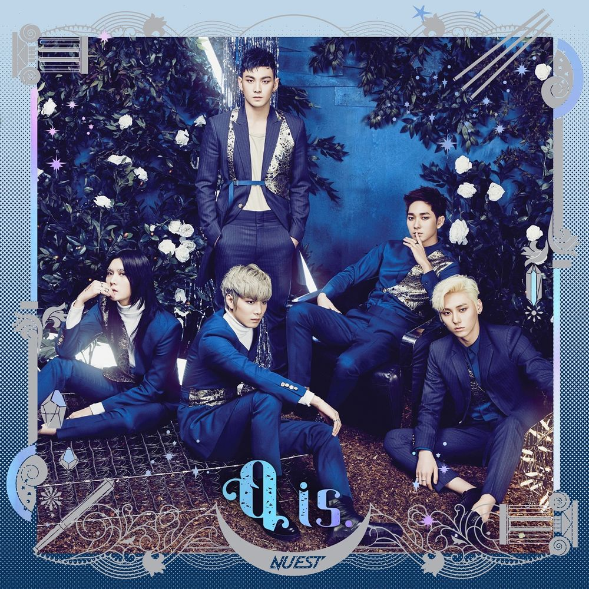
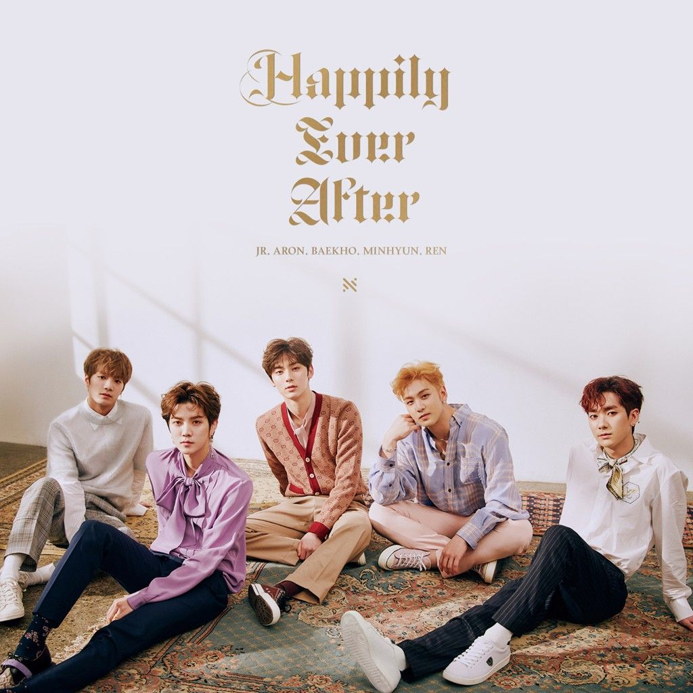
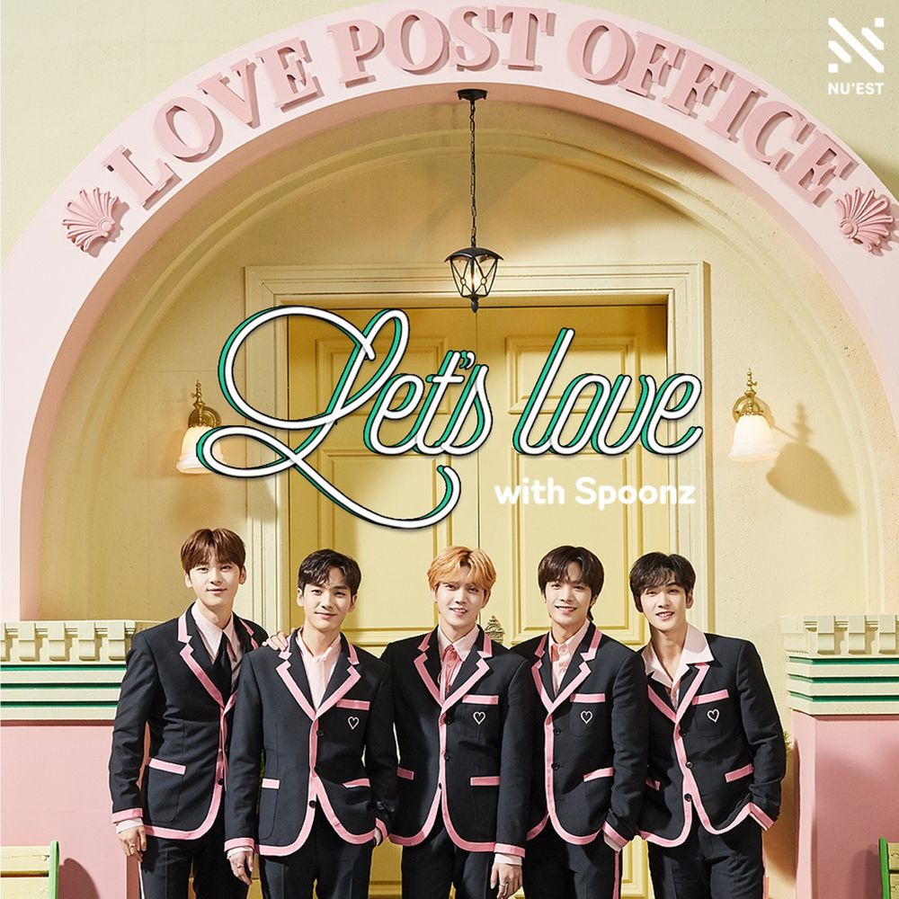

타이틀곡 'FACE'는 터져나오는 잭팟!이라는 중독적인 후렴구로 인기를 끌었다.
학교폭력 등의 사회적 문제를 비판하는 내용의 가사를 담고 있다.
뮤직 비디오에 세븐틴의 에스쿱스, 우지, 호시, 원우, 민규, 승관 그리고 배우 장도윤이 출연했다.
국내보다는 해외의 반응이 폭발적이었으며,
덕분에 유튜브 조회수가 중소기획사 남돌 치고 매우 높은 편인데 역대 대한민국 보이그룹의 모든 데뷔곡을
통틀어서 2위를 기록하고 있다.
[1] 2019년 4월 28일, 1theK 채널에 올라온 뮤비의 조회수 1억뷰를 돌파했다.
이로 인해 FACE는 뉴이스트의 첫 1억뷰 뮤비가 되었으며 또한 3년 만의 완전체 컴백 전 날 달성하여 더욱 의미가 뜻깊다.#

후속곡은 '너네 누나 소개시켜줘'로 예정되어 있었으나,
일부 멤버의 건강상의 문제[1]로 인하여 3월 말 활동이 조기 마무리 되면서 (일부 비방 행사를 제외하고는)
사실상 미니앨범 2집의 후속곡 활동은 전무하다.
2017년 6월 18일 새벽 4시 당시 멜론 차트에서는 뉴이스트의 노래 5곡[2]을 팬들의 참여로 역주행되어 재조명 받았다.
그 동안 이 노래들을 알았던 사람들은, '이제라도 뉴이스트의 노래들이 재조명받아 기쁘다'는 반응이다.

여보세요 활동 후 한동안 활동이 없었다. 컴백이 늦춰지던 가운데[1]...
드디어 8월 8일 저녁 공식 팬 카페와 트위터를 통해 멤버 개인별 포토 티저가 공개되었다.
2013년 8월 22일 미니앨범 3집 "잠꼬대"로 컴백하였다.
8월 15일 자정 멤버 JR과 아론의 랩이 들어간 인트로[2]가 공식유투브에 공개되었다.
013년 8월 22일 정오 미니앨범 3집 잠꼬대의 음원이 공개되었다.
같은 날 롯데카드 아트센터에서 멜론 이벤트를 통해 추첨된 300여명의 인원을 동원한 쇼케이스에서
'Fine Girl'이 BGM으로 깔린 멤버들의 휴가 영상이 공개되었다.
타이틀곡은 이단옆차기가 프로듀싱한 잠꼬대, 후속곡은 Beautiful Ghost 였으나 1~2주간의 짧은 활동 뒤 미니앨범 3집 활동을 마무리했다.

정규 1집 Re:BIRTH 발매로부터 무려 1년 7개월의 공백기를 마무리하고 국내 활동을 재개하였다.
여왕의 기사 3부작의 첫 번째 앨범이다.
타이틀곡 '여왕의 기사'는 김강원 작가의 동명의 만화를 모티브로 만들어졌다.
따라서 원작 만화의 설정이 상당 부분 차용되었으며, 가사와 뮤비 내용과도 많은 관련이 있다.
'카툰돌'이라는 컨셉을 앞세워, '여왕의 기사' 등장인물 중 기사 리이노를 멤버 5명이 표현했다.[1]

여왕의 기사 3부작의 두 번째 앨범이다. 'Love Paint'의 뮤직비디오 단체 티저의 "Still missing, but waiting, Q"라는 글귀가 나타내듯이,
전작 '여왕의 기사'와 이어지는 컨셉으로, 아직까지도 뉴이스트가 그녀(여왕)를 잊지 못하고 (혹은 찾지 못하고) 기다리고 있다는 의미가 내포되어 있다.
모든 수록곡이 '컬러', 그리고 '아름다움'을 테마로 하고 있고, 부제에서 알 수 있듯이 수록곡 5곡으로 하루 24시간을 표현하고 있으며,
멤버 5명이 각각 새벽 - 민현 / 아침 - JR / 오후 - 렌 / 저녁 - 아론 / 밤 - 백호 와 같이 시간을 담당하고 있다.
탄생석 세계관 또한 담아내고 있어, 멤버들의 탄생석[2] 다섯 개를 모아 놓은 장면이 뮤직비디오에 수록되어 있다.[3]

2020년 2월 14일에 발매된 스푼즈와의 두 번째 콜라보레이션 음원이다.
밸런타인 데이에 발매되어, 가사에도 초콜렛이 많이 언급된다.
뉴이스트 멤버 전원이 작사에 참여하였고, 백호가 처음으로 작곡진 중 가장 앞 순서에 표기되었다.